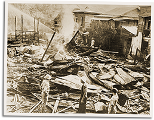

|
j
a v a s c r i p t |
March 28, 1942

Bataan Village Destruction
Japanese planes are bombing Corregidor and Bataan today from bases in Nichols and Zablan — almost within range of Corregidor guns. The Japanese prefer to talk about bombing Corregidor because Bataan's defenses were supposed to have been finished off weeks ago. "Japan establishing diplomatic relations with the Vatican," touts La Vanguardia, and of course, this is a "Diplomatic defeat for America." The push for religious recognition is only because the Philippines is 85% Catholic. The Japanese appear to be desperate for some good news. Contrast recent articles claiming the war will end in a few months, or reports of allied weaknesses, with Hayashi's statement that the real war is about to start. No doubt the Japanese are preparing a large convoy for New Guinea or Australia. Yesterday Maurice and I peered at a map of Australia trying to figure out where the Japanese would strike next. There hasn't been much Australian news lately. General Blamey is back from the Middle East to organize his troops at home, and the Queen Mary must have arrived there days ago with some 10,000 American troops. It's starting to look like Australia will go on the offensive. If the Japanese are allowed to land, the Australians will have to abandon large tracts of land in order to defend population centers. |
|
|
|
|